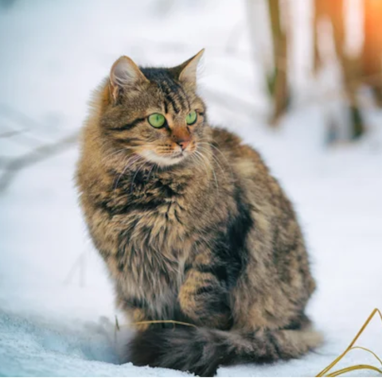

|
El gato atigrado es conocido por su pelaje con patrones de rayas, lo que le da un aspecto único y fascinante. Aquí tienes algunas características clave:
|
Historia
Los gatos atigrados se encuentran en diversas partes del mundo y no representan una raza específica, sino un patrón de pelaje. A lo largo de la historia, se han valorado por su capacidad para cazar y su compañía en los hogares. Varios gatos callejeros y domésticos muestran patrones atigrados.
Salud
La salud de un gato atigrado depende de su raza y entorno. Es importante proporcionar atención veterinaria regular y asegurarse de que el gato esté al día con las vacunas y los cuidados necesarios.
Galería de Fotos


- 